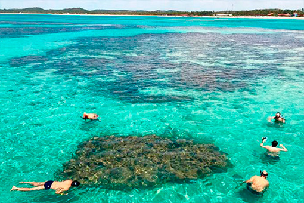

|
 |  |
PRAIA DE MARACAÍPE
Apesar de Porto de Galinhas ter diversas atividades legais para pessoas de todas as idades,
muita gente acaba se focando apenas no centrinho, esquecendo outras atrações lindíssimas que ficam a curtas
distâncias de carro.
Um exemplo disso é ver o pôr do sol em Maracaípe, espetáculo que pode ser admirado a
bordo de jangadas que também levam
para observar cavalos-marinhos que moram na foz do rio.
Pacotes Promocionais
| Opções | Valor |
|---|---|
| Hospedagem + Passeios | R$950 |
| Passeio de Jangada | R$250 |
PÁGINA INICIAL